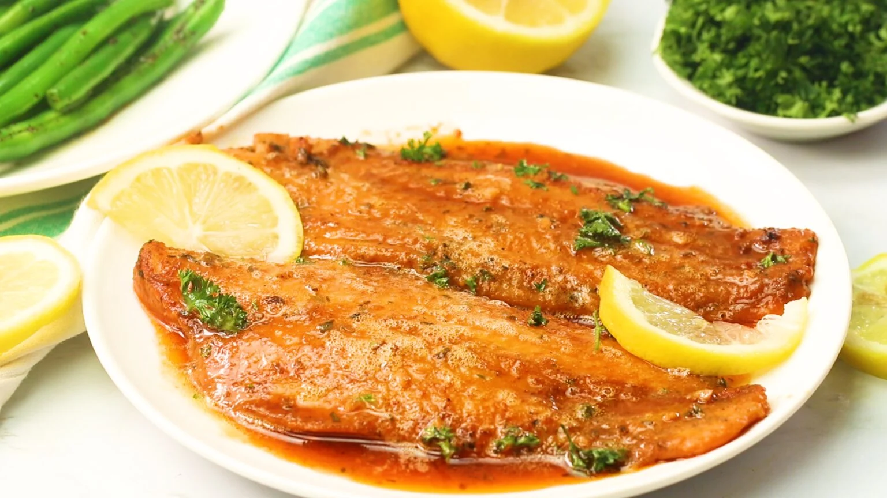

The easiest way to make pizza at home, and it’s ready in no time! Made with soft yet hearty French bread, robust, garlicky and herby pizza sauce, two types of rich cheese and all your favorite toppings!

Oven-Baked Tilapia offers a super easy low-carb dish in less than 20 minutes from start to finish. Flaky, melt-in-your-mouth tilapia so mild that even the pickiest eater will fall in love. This easy yet flavorful dish is perfect for your weekly rotation!
 View Recipes